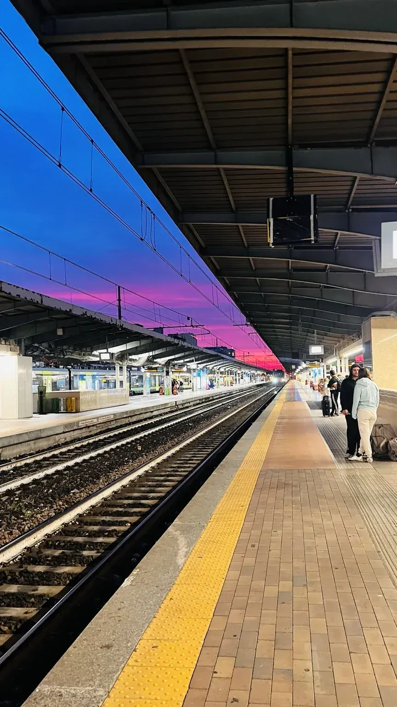
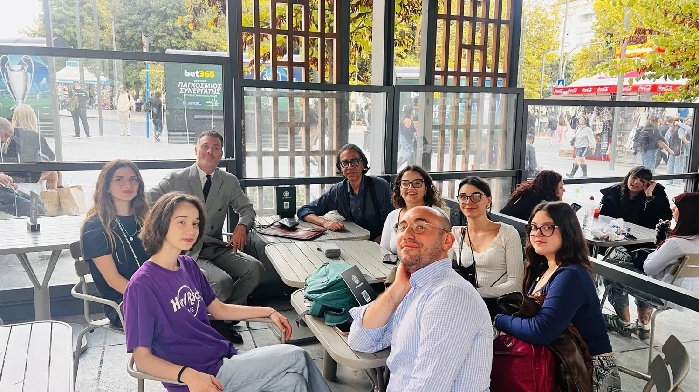
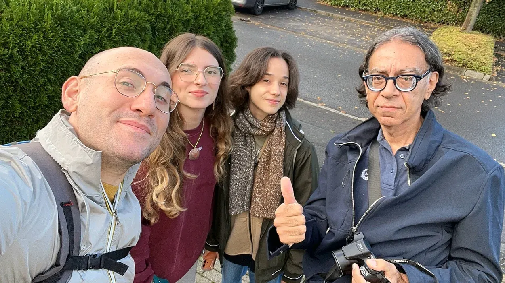

Erasmus+ · DiscoverEU KA155
Odisseo Philosophorum
Un viaggio educativo europeo concluso nell'ottobre 2026. Filosofia, partecipazione, cittadinanza e apprendimento interculturale.
Scopri l'esperienza →In Sicilia e in Europa coltiviamo il pensiero critico, la partecipazione dei giovani e il dialogo tra persone e culture.

Mobilità europea, media literacy e dialogo socratico: percorsi educativi nati dall'incontro tra persone, territori e idee.

Un viaggio educativo europeo concluso nell'ottobre 2026. Filosofia, partecipazione, cittadinanza e apprendimento interculturale.
Scopri l'esperienza →Laboratori di media literacy, pensiero critico e confronto sulla disinformazione, con attività realizzate a Catania nel 2026.
Esplora il metodo →Socratic Dialogue Labs for Democratic Resilience: cooperazione europea per rafforzare il dialogo e la resilienza democratica.
Chiedi informazioni →Mettiamo al centro le domande, l'ascolto attivo e la sospensione del giudizio. Nei laboratori sperimentiamo il dialogo socratico come pratica di ricerca comune, capace di sviluppare autonomia di pensiero, consapevolezza e responsabilità civica.
Utilizziamo metodologie di educazione non formale, riflessione collettiva, narrazione, strumenti digitali e confronto interculturale.
Partecipa a un laboratorio →L'Agorà è uno spazio aperto alle differenze, alla curiosità e al confronto. Ogni prospettiva diventa un'occasione per pensare con maggiore profondità.
Agorà – Scuola di Dialogo Socratico e Cittadinanza Attiva APS promuove partecipazione giovanile, cittadinanza attiva e dialogo interculturale attraverso iniziative locali e progetti europei.
Siamo radicati nel territorio siciliano e collaboriamo con organizzazioni e comunità in Europa, con attenzione ai giovani che incontrano ostacoli alla partecipazione.

Laboratori cooperativi per apprendere attraverso esperienza, riflessione e dialogo.
Progetti Erasmus+ e percorsi interculturali per favorire accesso e cittadinanza attiva.
Documentiamo le esperienze e condividiamo strumenti, testimonianze e materiali educativi.
Rendiamo accessibili informazioni essenziali sull'associazione, sui nostri progetti e sulle opportunità di partecipazione. I documenti pubblicati devono essere aggiornati e rispettare la riservatezza delle persone coinvolte.
Statuto, informazioni associative, progetti e graduatorie quando pertinenti e pubblicabili.
Richiedi informazioni →Vuoi partecipare a un'attività, proporre una collaborazione o conoscere meglio l'associazione? Scrivici: ti risponderemo attraverso i nostri canali ufficiali.
Scrivi ad Agorà →Scuola di Dialogo Socratico e Cittadinanza Attiva
Email ufficiale
agora.scuoladidialogosocratico@gmail.com
Territorio operativo
Motta Sant'Anastasia (CT), Sicilia · Attività in Italia e in Europa
Rete europea
OID Erasmus+: E10375013